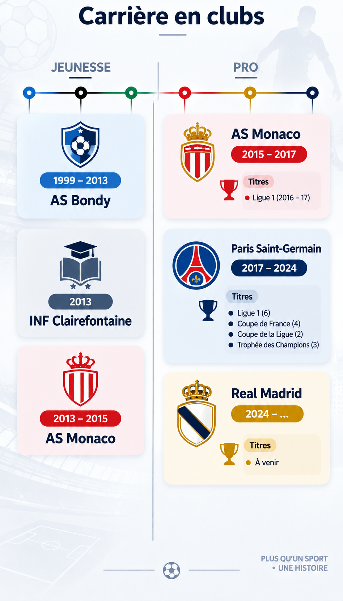

ACCUEIL > KYLIAN MBAPPÉ
LE JOUEUR QUI A MARQUÉ PLUSIEURS GÉNÉRATIONS
KYLIAN
MBAPPÉ
LA DISCIPLINE. LE TRAVAIL. LA LÉGENDE.
De Madère au sommet du football mondial,
l’histoire d’un joueur qui a repoussé toutes les limites.
980+ BUTS EN CARRIÈRE
1 300+ MATCHS JOUÉS
5 BALLONS D’OR
35 TROPHÉES

Palmarès
On ajoutera ici ses titres et récompenses.
Statistiques
On ajoutera ici ses statistiques.
Galerie
On ajoutera ici ses photos.